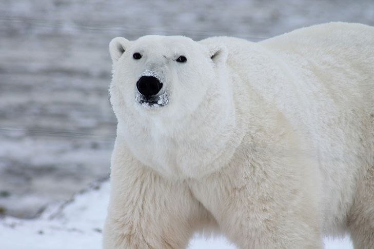

Orso Polare

Nome comune: Orso Polare
Nome scientifico: Ursus Maritimus
Ordine: Carnivora
Famiglia: Ursidae
Habitat: L'orso polare vive nell'Artide. Il suo habitat è compreso in 6 nazioni: Canada, Stati Uniti, Russia, Groenlandia, Norvegia e Islanda.
Riproduzione: Dopo l'accoppiamento, la femmina dell'orso polare inizia il periodo di gestazione che varia da 195 a 265 giorni e costruisce una tana nella neve dove far crescere ed allevare i cuccioli.
Curiosità: Il metodo di caccia più famoso degli orsi polari è quello usato per le foche: il plantigrado sente il rumore della preda sotto il ghiaccio, si apposta presso una spaccatura e, non appena la preda esce per respirare, la uccide con una violenta zampata.